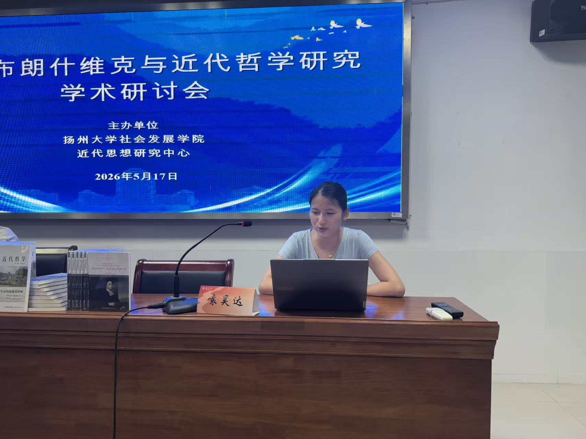
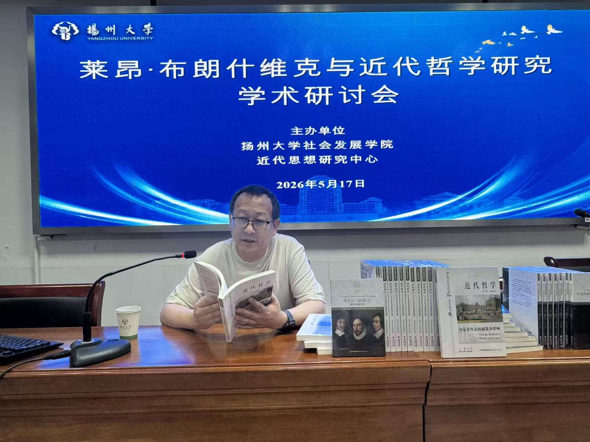
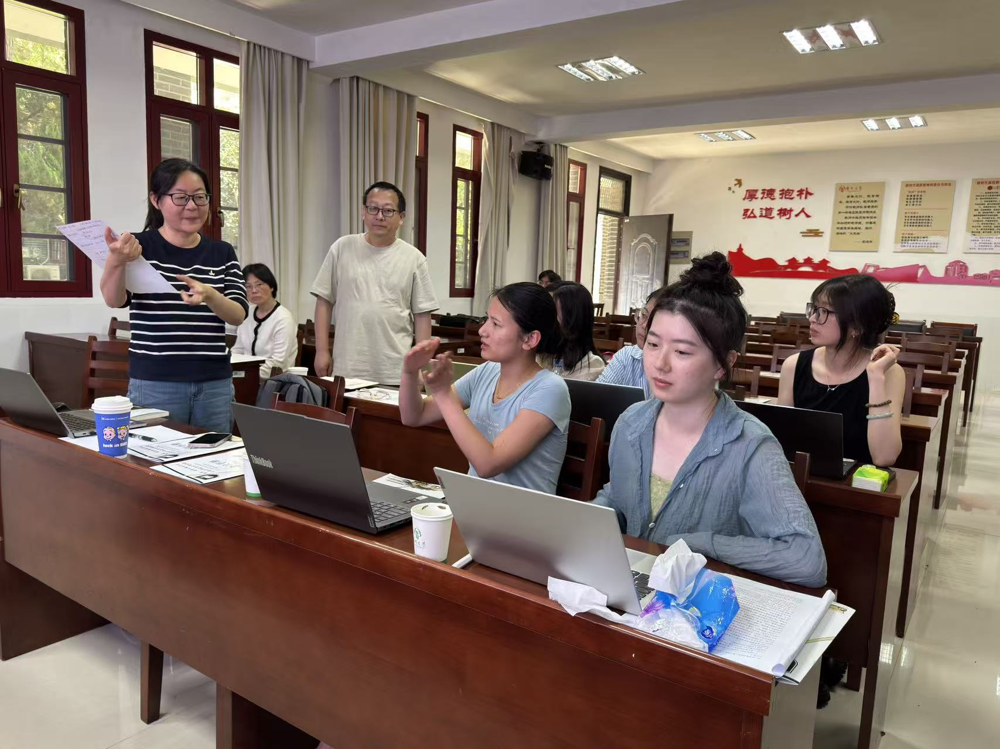

活动概述
2026 年 5 月 17 日上午，“莱昂·布朗什维克与近代哲学研究”学术研讨会在扬州大学瘦西湖校区社会发展学院 44#108 举行。本次会议由扬州大学社会发展学院现代思想研究中心主办，是中心第六期系列研讨会。
研讨会以近期翻译出版的《笛卡尔与帕斯卡：蒙田的阅读者》为重要背景，集中讨论布朗什维克的法国理性主义研究、科学哲学视野与近代哲学史方法。
报告与讨论
- 袁昊达、许宇璐分别从法国 19 世纪教育改革、布朗什维克的斯宾诺莎研究等角度作介绍。
- 郭雨婷、刘琪、卢彦臻、皮立雨、申慧霞、滕光伟围绕笛卡尔、帕斯卡、蒙田、孔德与巴什拉等问题展开评论。
- 左天梦在回应中强调，“阅读”不是简单影响关系，而是理解布朗什维克重构近代哲学史的重要方法问题。
- 刘铭在总结中指出，布朗什维克研究有助于重新理解法国理性主义、近代哲学史书写与科学哲学的发展。
活动照片


